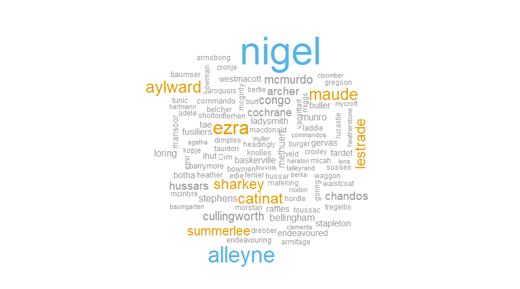

Text mining with Spark & sparklyr
This article focuses on a set of functions that can be used for text mining with Spark and sparklyr. The main goal is to illustrate how to perform most of the data preparation and analysis with commands that will run inside the Spark cluster, as opposed to locally in R. Because of that, the amount of data used will be small.
Data source
For this example, there are two files that will be analyzed. They are both the full works of Sir Arthur Conan Doyle and Mark Twain. The files were downloaded from the Gutenberg Project site via the gutenbergr package. Intentionally, no data cleanup was done to the files prior to this analysis. See the appendix below to see how the data was downloaded and prepared.
readLines("arthur_doyle.txt", 10)
## [1] "THE RETURN OF SHERLOCK HOLMES,"
## [2] ""
## [3] "A Collection of Holmes Adventures"
## [4] ""
## [5] ""
## [6] "by Sir Arthur Conan Doyle"
## [7] ""
## [8] ""
## [9] ""
## [10] ""
Data Import
Connect to Spark
An additional goal of this article is to encourage the reader to try it out, so a simple Spark local mode session is used.
library(sparklyr)
library(dplyr)
sc <- spark_connect(master = "local", version = "2.1.0")
spark_read_text()
The spark_read_text() is a new function which works like readLines() but for sparklyr. It comes in handy when non-structured data, such as lines in a book, is what is available for analysis.
# Imports Mark Twain's file
# Setting up the path to the file in a Windows OS laptop
twain_path <- paste0("file:///", getwd(), "/mark_twain.txt")
twain <- spark_read_text(sc, "twain", twain_path)
# Imports Sir Arthur Conan Doyle's file
doyle_path <- paste0("file:///", getwd(), "/arthur_doyle.txt")
doyle <- spark_read_text(sc, "doyle", doyle_path)
Data transformation
The objective is to end up with a tidy table inside Spark with one row per word used. The steps will be:
- The needed data transformations apply to the data from both authors. The data sets will be appended to one another
- Punctuation will be removed
- The words inside each line will be separated, or tokenized
- For a cleaner analysis, stop words will be removed
- To tidy the data, each word in a line will become its own row
- The results will be saved to Spark memory
sdf_bind_rows()
sdf_bind_rows()appends thedoyleSpark Dataframe to thetwainSpark Dataframe. This function can be used in lieu of adplyr::bind_rows()wrapper function. For this exercise, the columnauthoris added to differentiate between the two bodies of work.
all_words <- doyle %>%
mutate(author = "doyle") %>%
sdf_bind_rows({
twain %>%
mutate(author = "twain")}) %>%
filter(nchar(line) > 0)
regexp_replace
- The Hive UDF, regexp_replace, is used as a sort of
gsub()that works inside Spark. In this case it is used to remove punctuation. The usual[:punct:]regular expression did not work well during development, so a custom list is provided. For more information, see the Hive Functions section in thedplyrpage.
all_words <- all_words %>%
mutate(line = regexp_replace(line, "[_\"\'():;,.!?\\-]", " "))
ft_tokenizer()
ft_tokenizer()uses the Spark API to separate each word. It creates a new list column with the results.
all_words <- all_words %>%
ft_tokenizer(input.col = "line",
output.col = "word_list")
head(all_words, 4)
## # Source: lazy query [?? x 3]
## # Database: spark_connection
## author line word_list
## <chr> <chr> <list>
## 1 doyle THE RETURN OF SHERLOCK HOLMES <list [5]>
## 2 doyle A Collection of Holmes Adventures <list [5]>
## 3 doyle by Sir Arthur Conan Doyle <list [5]>
## 4 doyle CONTENTS <list [1]>
ft_stop_words_remover()
ft_stop_words_remover()is a new function that, as its name suggests, takes care of removing stop words from the previous transformation. It expects a list column, so it is important to sequence it correctly after aft_tokenizer()command. In the sample results, notice that the newwo_stop_wordscolumn contains less items thanword_list.
all_words <- all_words %>%
ft_stop_words_remover(input.col = "word_list",
output.col = "wo_stop_words")
head(all_words, 4)
## # Source: lazy query [?? x 4]
## # Database: spark_connection
## author line word_list wo_stop_words
## <chr> <chr> <list> <list>
## 1 doyle THE RETURN OF SHERLOCK HOLMES <list [5]> <list [3]>
## 2 doyle A Collection of Holmes Adventures <list [5]> <list [3]>
## 3 doyle by Sir Arthur Conan Doyle <list [5]> <list [4]>
## 4 doyle CONTENTS <list [1]> <list [1]>
explode
- The Hive UDF explode performs the job of unnesting the tokens into their own row. Some further filtering and field selection is done to reduce the size of the dataset.
all_words <- all_words %>%
mutate(word = explode(wo_stop_words)) %>%
select(word, author) %>%
filter(nchar(word) > 2)
head(all_words, 4)
## # Source: lazy query [?? x 2]
## # Database: spark_connection
## word author
## <chr> <chr>
## 1 return doyle
## 2 sherlock doyle
## 3 holmes doyle
## 4 collection doyle
compute()
compute()will operate this transformation and cache the results in Spark memory. It is a good idea to pass a name tocompute()to make it easier to identify it inside the Spark environment. In this case the name will be all_words
all_words <- all_words %>%
compute("all_words")
Full code
This is what the code would look like on an actual analysis:
all_words <- doyle %>%
mutate(author = "doyle") %>%
sdf_bind_rows({
twain %>%
mutate(author = "twain")}) %>%
filter(nchar(line) > 0) %>%
mutate(line = regexp_replace(line, "[_\"\'():;,.!?\\-]", " ")) %>%
ft_tokenizer(input.col = "line",
output.col = "word_list") %>%
ft_stop_words_remover(input.col = "word_list",
output.col = "wo_stop_words") %>%
mutate(word = explode(wo_stop_words)) %>%
select(word, author) %>%
filter(nchar(word) > 2) %>%
compute("all_words")
Data Analysis
Words used the most
word_count <- all_words %>%
group_by(author, word) %>%
tally() %>%
arrange(desc(n))
word_count
## # Source: lazy query [?? x 3]
## # Database: spark_connection
## # Groups: author
## # Ordered by: desc(n)
## author word n
## <chr> <chr> <dbl>
## 1 twain one 20028
## 2 doyle upon 16482
## 3 twain would 15735
## 4 doyle one 14534
## 5 doyle said 13716
## 6 twain said 13204
## 7 twain could 11301
## 8 doyle would 11300
## 9 twain time 10502
## 10 doyle man 10478
## # ... with more rows
Words used by Doyle and not Twain
doyle_unique <- filter(word_count, author == "doyle") %>%
anti_join(filter(word_count, author == "twain"), by = "word") %>%
arrange(desc(n)) %>%
compute("doyle_unique")
doyle_unique
## # Source: lazy query [?? x 3]
## # Database: spark_connection
## # Groups: author
## # Ordered by: desc(n), desc(n)
## author word n
## <chr> <chr> <dbl>
## 1 doyle nigel 972
## 2 doyle alleyne 500
## 3 doyle ezra 421
## 4 doyle maude 337
## 5 doyle aylward 336
## 6 doyle catinat 301
## 7 doyle sharkey 281
## 8 doyle lestrade 280
## 9 doyle summerlee 248
## 10 doyle congo 211
## # ... with more rows
doyle_unique %>%
head(100) %>%
collect() %>%
with(wordcloud::wordcloud(
word,
n,
colors = c("#999999", "#E69F00", "#56B4E9","#56B4E9")))

Twain and Sherlock
The word cloud highlighted something interesting. The word lestrade is listed as one of the words used by Doyle but not Twain. Lestrade is the last name of a major character in the Sherlock Holmes books. It makes sense that the word “sherlock” appears considerably more times than “lestrade” in Doyle’s books, so why is Sherlock not in the word cloud? Did Mark Twain use the word “sherlock” in his writings?
all_words %>%
filter(author == "twain",
word == "sherlock") %>%
tally()
## # Source: lazy query [?? x 1]
## # Database: spark_connection
## n
## <dbl>
## 1 16
The all_words table contains 16 instances of the word sherlock in the words used by Twain in his works. The instr Hive UDF is used to extract the lines that contain that word in the twain table. This Hive function works can be used instead of base::grep() or stringr::str_detect(). To account for any word capitalization, the lower command will be used in mutate() to make all words in the full text lower cap.
instr & lower
Most of these lines are in a short story by Mark Twain called A Double Barrelled Detective Story. As per the Wikipedia page about this story, this is a satire by Twain on the mystery novel genre, published in 1902.
twain %>%
mutate(line = lower(line)) %>%
filter(instr(line, "sherlock") > 0) %>%
pull(line)
## [1] "late sherlock holmes, and yet discernible by a member of a race charged"
## [2] "sherlock holmes."
## [3] "\"uncle sherlock! the mean luck of it!--that he should come just"
## [4] "another trouble presented itself. \"uncle sherlock 'll be wanting to talk"
## [5] "flint buckner's cabin in the frosty gloom. they were sherlock holmes and"
## [6] "\"uncle sherlock's got some work to do, gentlemen, that 'll keep him till"
## [7] "\"by george, he's just a duke, boys! three cheers for sherlock holmes,"
## [8] "he brought sherlock holmes to the billiard-room, which was jammed with"
## [9] "of interest was there--sherlock holmes. the miners stood silent and"
## [10] "the room; the chair was on it; sherlock holmes, stately, imposing,"
## [11] "\"you have hunted me around the world, sherlock holmes, yet god is my"
## [12] "\"if it's only sherlock holmes that's troubling you, you needn't worry"
## [13] "they sighed; then one said: \"we must bring sherlock holmes. he can be"
## [14] "i had small desire that sherlock holmes should hang for my deeds, as you"
## [15] "\"my name is sherlock holmes, and i have not been doing anything.\""
## [16] "late sherlock holmes, and yet discernible by a member of a race charged"
spark_disconnect(sc)
Appendix
gutenbergr package
This is an example of how the data for this article was pulled from the Gutenberg site:
library(gutenbergr)
gutenberg_works() %>%
filter(author == "Twain, Mark") %>%
pull(gutenberg_id) %>%
gutenberg_download() %>%
pull(text) %>%
writeLines("mark_twain.txt")